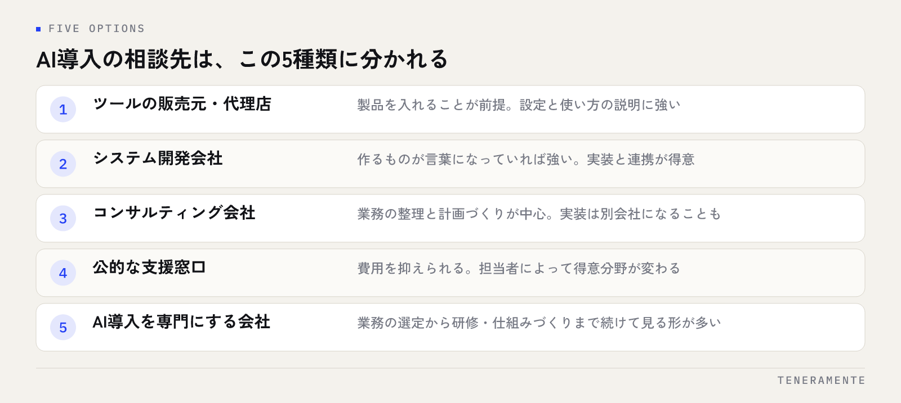

AIを業務に入れたいと決まっても、次に止まるのは「誰に相談すればよいのか」です。検索すると支援をうたう会社が並び、どこも似た説明に見えます。中小企業のAI導入をどこに相談するかは、やりたいことの種類ではなく、社内に判断できる人がいるかどうかで決まります。この記事では相談先を5つに分け、それぞれが得意な範囲と、話を聞くときに確認する項目を整理します。
📌 この記事の結論
相談先は大きく、ツールの販売元・システム開発会社・コンサルティング会社・公的な支援窓口・AI導入を専門にする会社の5種類に分かれます。選ぶ基準は実績の多さではなく、要件が決まっていない段階から一緒に整理してくれるかどうかです。相談の前に、困っている業務を3つ書き出しておくだけで話が具体的になります。
01AI導入の相談先は、大きく5種類に分かれる
同じ「AI導入支援」という言葉を使っていても、立っている場所が違います。まず種類を分けて見てください。

ツールの販売元・代理店は、特定の製品を入れることが前提です。製品が決まっているぶん話が早く、使い方の説明も充実しています。ただし「その製品で解決できるか」の判断は、こちらで持つ必要があります。
システム開発会社は、作ることが得意な相手です。既存の業務システムとつなぐ、社内のデータを使う仕組みを作るといった実装の話になると強くなります。一方で、何を作るかが決まっていない段階の相談には向き不向きがあります。
コンサルティング会社は、業務の整理や全体計画を描くところが中心です。手を動かす部分は別の会社に渡ることが多く、計画と実装の間に引き継ぎが発生します。
公的な支援窓口は、商工会議所や中小企業向けの相談拠点などです。費用がかからない、または低く抑えられる代わりに、担当者によって得意分野が変わります。
AI導入を専門にする会社は、どの業務から始めるかの整理と、研修・仕組みづくりまでを続けて見る形が多い相手です。
02相談先ごとの向き・不向きを表で整理する
同じ相談内容でも、相手によって返ってくる答えが変わります。自社がどの段階にいるかと照らして見てください。
| 相談先 | 向いている段階 | 得意な範囲 | 注意したい点 |
|---|---|---|---|
| ツールの販売元・代理店 | 入れる製品がほぼ決まっている | 製品の設定、使い方の説明 | 製品で解決できるかの判断は自社側に残る |
| システム開発会社 | 作るものが言葉になっている | 既存システムとの連携、実装 | 要件が未定の段階の整理は範囲外になりやすい |
| コンサルティング会社 | 全社の方針から考えたい | 業務の棚卸し、計画づくり | 実装が別会社になると引き継ぎが生じる |
| 公的な支援窓口 | 何から手をつけるか分からない | 制度の案内、一般的な進め方 | 担当者により得意分野が変わる |
| AI導入を専門にする会社 | やりたいことが曖昧なまま相談したい | 業務の選定、研修、仕組みづくり | 対応できる範囲の広さに差がある |
表のどこに自社が当てはまるかを決めるには、1つだけ確認すれば足ります。「AIで何をするか」を一文で書けるかどうかです。書けるなら作る側に、書けないなら整理から付き合う側に相談するほうが早く進みます。この見極め方は社内へのAI導入、最初の一歩の決め方でも扱っています。
03相談する前に、社内で決めておく3つのこと
相談先を選ぶ前の準備で、話の質がかなり変わります。完璧な資料は不要です。次の3つを紙1枚に書くだけで十分です。
1つ目は、困っている業務を3つ挙げること。「AIで何かしたい」ではなく、時間がかかっている、属人化している、ミスが出やすい業務を具体的に挙げます。月末の集計、問い合わせへの一次返信、議事録の作成——このくらいの粒度で構いません。
2つ目は、誰が触るかを決めること。全社で使うのか、特定の部署から始めるのか。使う人の人数とITへの慣れ具合は、提案される形を大きく変えます。
3つ目は、出せる予算の幅を決めること。正確な金額ではなく上限と、月々払えるのか一度きりかという形だけでよいです。予算を伏せたまま相談すると、比べられない提案が並びます。
この3つが書けていれば、どの相談先に行っても同じ土台で話せます。書き出す過程で「これはAIでなくても解決する」と気づくこともあり、それ自体が収穫になります。
04「何ができるか分からない」段階で相談してよい
準備といっても、できることの見当がつかないうちは3つを挙げるのも難しいものです。その段階で相談してはいけない、ということはありません。
ただし聞き方を変えてください。「AIで何ができますか」と尋ねると、一般的な事例の紹介で終わります。代わりに、自社の業務の流れを説明して「この中でAIが向いている部分はどこですか」と聞いてください。相手は答えるために業務を理解する必要があり、理解しようとするかどうかで相性が見えます。
このとき、業務の説明に使う資料は社内にあるもので構いません。業務の手順書、使っている帳票、月次の作業の一覧。きれいにまとめ直す必要はなく、実際に使っているものを見せるほうが正確に伝わります。
相談の場で「まずこの業務から試しましょう」と範囲を小さく切ってくれる相手は、進め方を知っています。逆に最初から全社の仕組みを提案してくる場合は、なぜその順番なのかを聞いてください。
05提案を受けたときに確認する項目
提案書や見積もりが出てきたら、次の項目を確認してください。そのまま相談の場で聞ける形にしています。
- 最初に取り組む業務はどれで、なぜその業務を選んだのか
- うまくいったかどうかを、何をもって判断するのか
- 費用のうち、一度きりの分と毎月かかる分はそれぞれいくらか
- 使うサービスの利用料は、見積もりに含まれているのか別払いか
- 社内のデータをどこに置き、誰が見られる状態になるのか
- 作ったあとの修正は、どこまでが契約の範囲か
- 社員が使えるようになるまでの説明や研修は含まれるか
- 途中でやめる場合、どこまでが自社に残るのか
- 担当者が変わったときの引き継ぎはどうなるか
- 部分的な依頼（研修だけ、仕組みだけ）は受けてもらえるか
答えられない項目があること自体は問題ではありません。確認の仕方が誠実かどうか、分からないことを分からないと言うかどうかを見てください。
確認のしかた
見積もりを比べるときは、合計金額ではなく「何をどこまでやるか」の範囲を並べてください。安い提案は範囲が狭いことが多く、高い提案に研修や運用の支援が含まれていることがあります。範囲をそろえてから金額を比べると、違いがはっきりします。
06公的な支援窓口と補助金の使いどころ
費用を抑えたい場合、公的な窓口から入るのは合理的な選択です。商工会議所や中小企業向けの相談拠点では、進め方の相談や制度の案内を受けられます。
向いているのは、まだ何も決まっていない段階で全体像を知りたいときです。特定の製品を売る立場ではないため、中立的な説明が得られます。一方で、実装まで一緒に進む相手ではないので、作る段階になれば別の相談先が必要になります。
補助金を使う場合は、順番に注意してください。制度の公募時期や対象の条件は年度ごとに変わるため、必ず最新の募集要項を確認します。また「補助金が使えるから導入する」と順番が逆になると、目的と合わない買い物になりやすいです。やりたいことを決めてから、それに使える制度を探してください。
申請を支援してくれる会社もありますが、申請の代行と導入の支援は別の仕事です。どちらをどこまで任せるのかを、契約の前に分けて確認しておいてください。
07よくある失敗とその避け方
- 1社だけに聞いて決める：相手の得意な形に合った提案が出ます。種類の違う2〜3社に同じ説明をして、返ってくる答えの違いを見てください
- 事例の数で選ぶ：他社の事例は参考になりますが、業務の中身は会社ごとに違います。事例よりも、自社の業務を聞こうとするかどうかを見てください
- 全社導入から始める：一度に広げると、使われないまま契約だけが残ります。1つの業務、1つの部署から始めて、効果を見てから広げてください
- ツールを決めてから相談する：製品が先に決まると、その製品でできる範囲に合わせて業務を変えることになります。業務の課題を先に置いてください
- 社内に担当を置かない：外部に任せても、社内で判断する人がいないと止まります。詳しい人でなくてよく、決める権限がある人を1人決めてください
- 研修を省く：仕組みを入れても、使い方が分からなければ使われません。導入の費用に使い方の説明が含まれているかを確認してください
- 効果の測り方を決めずに始める：何をもって成功とするかが曖昧だと、続けるかやめるかの判断ができません。相談の段階で決めてください
相談先を選ぶのは、業者を選ぶことではなく、一緒に考える相手を決めることです。最初の相談で業務を聞こうとしない相手は、あとでも聞きません。
08自分で進める場合と、専門家に任せる場合の分かれ目
分かれ目になるのは、社内に「使ってみて判断できる人」がいるかどうかです。
自分で進めやすいのは、生成AIのサービスを自分で契約して、実際の業務の資料で試せる人が社内にいる場合です。文章の下書き、要約、表の整理といった範囲なら、外部に頼まなくても始められます。まず自分で触ってみると、何が向いていて何が向いていないかの感覚がつかめるため、あとで相談するときの精度も上がります。
任せたほうが早いのは、社内のデータを使う仕組みを作る場合、複数の部署にまたがる業務を変える場合、そして社員への定着まで考える場合です。とくに情報の取り扱いや閲覧権限が関わると、設計の判断が必要になります。使う人が増えるほど、ルールと説明の整備が導入そのものより重くなります。
判断の順番としては、まず1つの業務で自分たちで試し、続けられそうなら範囲を広げる段階で相談する——この進め方が無理がありません。失敗しやすい形は中小企業のAI導入が失敗する7つのパターンと回避策に整理しています。
09よくある質問
相談する前に、何を準備すればよいですか？
何社くらいに相談するのがよいでしょうか？
小さな会社でも相談を受けてもらえますか？
社内のデータを使う相談をするとき、何に注意すればよいですか？
相談だけして、導入しない判断をしてもよいのでしょうか。
10まとめ：相談先は、整理から付き合ってくれるかで選ぶ
中小企業のAI導入をどこに相談するか——答えを決めるのは、やりたいことの大きさではありません。「AIで何をするか」を一文で書けるかどうかです。書けるなら作る側に、書けないなら整理から一緒に考える相手に相談するほうが、遠回りになりません。
相談の前に、困っている業務を3つ、使う人の範囲、予算の幅を紙1枚に書いてください。そのうえで立場の違う2〜3社に同じ説明をして、業務を聞こうとするかどうかを見る。この順番なら、製品に業務を合わせる失敗も、計画だけが残る失敗も避けられます。
TENERAMENTEなら、「何から始めるか」が決まっていない段階からご一緒し、挙げていただいた業務のうちどれが向いているかの整理から始めます。研修だけ、RAG（社内データ検索）の構築だけといった部分的なご依頼も可能なので、小さく試してから広げる進め方が取れますし、社員が使えるようになるまでの研修とルールづくりまで同じ窓口で見られるため、仕組みを入れたのに使われないという状態を避けられます。初回相談（60分）は無料です。AI活用支援の内容をご覧いただいたうえで、お問い合わせからお気軽にご相談ください。